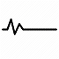

Ketinggian
2.392 mdpl

Lokasi
Jawa Timur, Indonesia

Status
Aktif

Jalur Populer
Cemoro Lawang
Jalur Pendakian
Jalur yang paling sering dilewati adalah, cemoro lawang
Titik mulai
Desa cemoro lawang
Tingkat kesulitan
MUDAH
Keterangan
Cocok untuk pemula, dan bersama keluarga
Jalur Pendakian
Jalur yang sering dilewati, ada via tumpang
Titik mulai
Desa Gubugklakah
Tingkat kesulitan
MENENGAH
Keterangan
Cocok untuk pemula, dan mudah diakses JEEP
Fasilitas

Area Camping
Tersedia area camping
Disekitar area Cemoro lawang yang tentunya nyaman untuk dipakai
Toilet
Disana pun tersedia toilet yang nyaman untuk digunkan

Warung makan
Disana pun tersedia warung makan dan tidak usah khawatir kehabisan makanan di perjalanan

Area Parkir
Disana pun tersedia area parkir yang aman dan bisa untuk kendaraan roda 2 dan roda 4